- MacDive에서 옮겨 오기어떤 파일을 내보내야 하는지, 아무것도 잃지 않고 옮기는 방법.
- 다이브 컴퓨터에서 다운로드Shearwater 및 다른 Bluetooth 컴퓨터, 또는 Mac에서 케이블로.
- Garmin Descent워치나 Garmin Connect에서 .fit 파일을 가져옵니다.
문제가 있나요? 문제 해결을 참고하세요. Thermocline은 로그북입니다: 다이브 컴퓨터가 기록한 것을 보여 주며, 감압은 절대 계산하지 않습니다.
앱 받기
Thermocline은 Apple 기기 전용입니다: iPhone, iPad, Mac, Apple Watch. 베타 기간에는 Apple의 TestFlight 앱으로 설치합니다.
| 작업 | iPhone 및 iPad | Mac |
|---|---|---|
| 베타 참여하기 | 베타 참여하기: iPhone, iPad, Mac, Apple Watch용 링크 하나. 각 기기에서 열고 TestFlight로 설치하세요. Apple Watch 앱은 iPhone 앱과 함께 설치됩니다. 모든 기기가 iCloud로 같은 로그북을 공유합니다. | |
| 2026년 11월 18일 이전에 iPhone 베타에 참여한 경우 | 그 앱은 이전되었습니다. 기존 iPhone 앱에서 옮기기를 참고하세요. | |
| 최신 상태 유지 | TestFlight에서 새 빌드를 제공하면 사용하는 모든 기기를 업데이트하세요. 이전 빌드는 업데이트할 때까지 변경 사항 전송을 멈추고, 그렇다고 알려 줍니다. 잃는 것은 없습니다. | |
처음 실행과 둘러보기
처음 실행하면 이름, 단위, 다이빙을 어디서 가져올지 묻습니다. 단위는 미터법으로 저장되며, 바꾸면 표시만 바뀝니다.
| 작업 | iPhone 및 iPad | Mac |
|---|---|---|
| 설정 | 프로필 탭 | Thermocline → 설정 |
| 둘러보기 | 프로필 → 도움말 → 둘러보기 보기 | 도움말 → 둘러보기 |
둘러보기는 내 로그북이 아닌 샘플 로그북으로 모든 화면을 안내합니다.
이 페이지의 스크린샷은 둘러보기의 샘플 로그북입니다: 다이빙과 사이트는 지어낸 것입니다. 탭하면 원래 크기로 볼 수 있습니다.

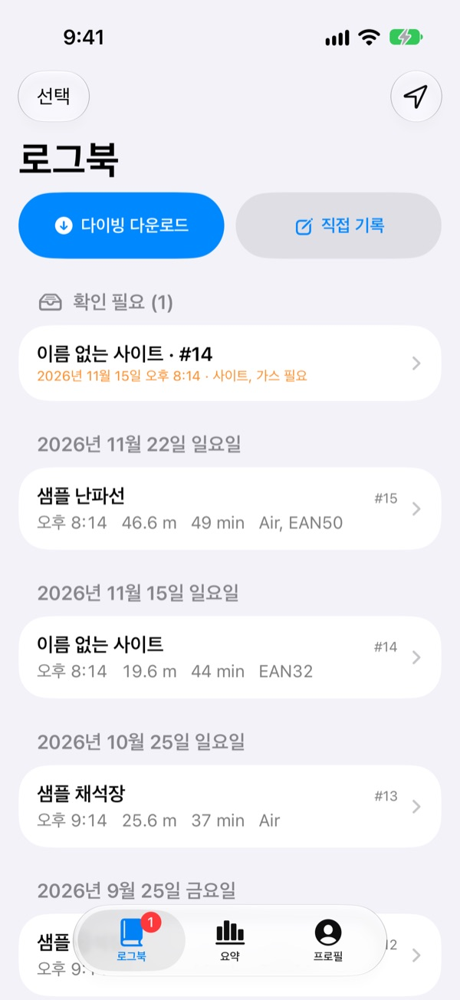
로그북 가져오기
Thermocline은 MacDive(폴더, XML 또는 UDDF), Shearwater Cloud 데이터베이스, Garmin .fit 파일, 모든 로그북의 UDDF, CSV를 읽습니다. 추가할 다이빙은 직접 선택하며, 읽을 수 없는 항목은 목록으로 보여 주고 아무 말 없이 버리는 일은 절대 없습니다.
| 작업 | iPhone 및 iPad | Mac |
|---|---|---|
| 파일 가져오기 | 프로필 → 내 데이터 → 로그북 파일 가져오기를 선택한 다음 iCloud Drive나 파일에서 고르세요. | 파일 메뉴의 가져오기 명령(⇧⌘I). |
| Garmin .fit 파일 | 여러 개를 한 번에 선택하세요. | 여러 개 또는 폴더 전체를 선택하세요. |
| 사진을 포함한 MacDive 폴더 | Mac 전용. 사진은 나중에 Mac 앱으로 옮기세요. | 파일 → MacDive에서 가져오기…를 선택하고 MacDive 폴더를 고르세요: 다이빙, 다이빙 사진, 카드 사진. MacDive의 파일은 변경되지 않습니다. |
| 다이빙 선택 | 원하지 않는 다이빙의 체크를 해제한 다음 가져오기. | |
| 가져오기 되돌리기 | 다이빙이 두 개 이상인 가져오기 전에 저장되는 복원 지점 가져오기 전. | 가져오기 보고서의 가져오기 취소… 또는 같은 복원 지점. |
가져오기가 끝나면 보고서에 추가된 다이빙 수, 가져오지 않은 항목과 그 이유, 확인할 항목이 표시됩니다. 파일에 가스가 없던 다이빙은 확인 필요에서 기다립니다.
어떤 MacDive 파일을 사용할까
MacDive는 XML, UDDF, 또는 (Mac에서) 폴더 전체를 제공할 수 있습니다. 담고 있는 내용이 서로 다릅니다:
| 담고 있는 내용 | MacDive XML | MacDive UDDF | MacDive 폴더 (Mac) |
|---|---|---|---|
| 다이빙, 사이트, 버디, 가스 | 예 | 예 | 예 |
| 탱크 크기 | 예 | 아니요: 크기가 내용적이 아니므로 비워 둡니다 | 예 |
| 다이브 프로파일 | 모든 다이빙 | 모든 다이빙 | MacDive가 iPhone이나 iPad에서 다운로드한 다이빙(암호화하여 저장)을 제외한 전부 |
| 다이빙 중 컴퓨터의 NDL과 ppO₂ | 예 | 아니요 | 예, 그 암호화된 다이빙은 제외 |
| 컴퓨터의 CNS | 예 | 아니요 | 예 |
| 장비, 태그, 다이빙 유형 | 예 | 아니요 | 예 |
| 다이빙 사진과 카드 사진 | 아니요 | 아니요 | 예 |
| 작업 | iPhone 및 iPad | Mac |
|---|---|---|
| 가장 좋은 방법 | MacDive에서 다이빙을 XML로 내보내고, 파일을 iCloud Drive에 저장한 다음 가져오세요. | MacDive 폴더를 가져온 다음 그 위에 XML을 가져오세요. XML이 암호화된 다이빙의 프로파일, NDL, ppO₂를 채웁니다. |
| 이미 UDDF를 가져온 경우 | XML도 가져오세요. 이미 로그북에 있는 다이빙은 다시 추가되지 않고 대응되며, 탱크 크기를 포함해 빠진 것만 채워집니다. 직접 입력하거나 수정한 내용은 바뀌지 않습니다. | |
Garmin Descent 워치
Garmin Descent는 다이빙마다 .fit 파일을 하나씩 저장합니다. 가져오는 방법은 두 가지입니다:
- 워치에서: 케이블로 Mac에 연결하고 GARMIN → Activity 폴더를 여세요. Mac에서는 GARMIN 폴더 전체를 가져올 수 있으며, 달리기나 설정처럼 다이빙이 아닌 파일은 건너뜁니다.
- Garmin Connect에서: 다이빙을 열고 원본 내보내기을 선택하세요. .zip 파일이 생기므로 먼저 압축을 푼 다음 안에 있는 .fit 파일을 가져오세요.
위치는 워치의 GPS에서 옵니다. 드리프트 다이빙에서는 워치가 출수한 곳을 시작으로 저장하지만, 가져오기가 실제로 입수한 곳을 찾아 그 사이트에 다이빙을 대응시킵니다. 지나간 다른 난파선은 메모에 추가하세요.

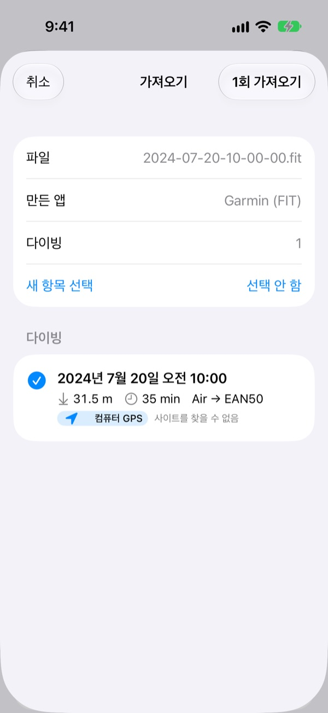
다이브 컴퓨터에서 다이빙 다운로드
먼저 다이브 컴퓨터를 Bluetooth 모드로 두세요. Shearwater에서는 Menu → Bluetooth. 약 2분 동안 그 상태로 유지됩니다. 마지막 다운로드 이후의 다이빙만 가져옵니다.
| 작업 | iPhone 및 iPad | Mac |
|---|---|---|
| 열기 | 로그북 → 다이빙 다운로드 | 파일 → 다이브 컴퓨터에서 다운로드… (⇧⌘D) |
| 연결 | Bluetooth. 근처에서 컴퓨터를 고르세요. 처음에는 컴퓨터 화면에 표시된 PIN을 입력하세요. | Bluetooth 또는 USB 케이블을 선택하세요. 케이블이라면 컴퓨터 모델과 포트를 고르고 시작하기 전에를 따르세요. |
| 마치기 | 원하지 않는 다이빙의 체크를 해제한 다음 유지. 체크 해제한 다이빙은 컴퓨터에 남아 있다가 다음에 다시 제안됩니다. | 다운로드. |
시계 질문. 각 컴퓨터에서 처음 다운로드할 때 컴퓨터 시계는 어느 시간대로 설정되어 있습니까?라고 묻습니다. 대부분의 컴퓨터는 시간대 없이 현지 시각을 기록하므로, 이 질문 덕분에 여행 중에도 다이빙 시각이 정확하게 유지됩니다. 답은 해당 컴퓨터에 대해 기억됩니다.
다이빙을 고른 뒤에는 하나씩 넘기며 사이트와 가스를 설정하거나 나중에 마치기를 선택할 수 있습니다: 그러면 확인 필요에서 기다립니다.
다이빙을 삭제했는데 되살리고 싶나요? 컴퓨터의 모든 다이빙 다운로드를 켜세요. 시간이 더 걸리며, 이미 로그북에 있는 다이빙은 건너뜁니다.

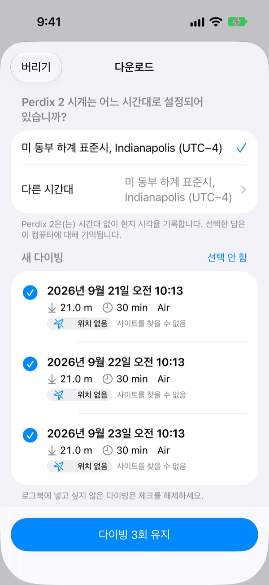
Shearwater Predator 및 Petrel 1
이 모델은 iPhone과 iPad가 사용할 수 없는 구형 Bluetooth(Bluetooth Classic)를 사용합니다. Mac에서 먼저 시스템 설정 → Bluetooth에서 컴퓨터를 페어링한 다음, 다운로드 창에서 USB 케이블을 선택하세요: 목록에 해당 포트가 나타날 수 있습니다. 컴퓨터를 Bluetooth 업로드 모드로 두고 다운로드를 선택하세요. 아직 실제 Predator나 Petrel 1에서 시도해 보지 않았으니, 성공하든 실패하든 다운로드 로그를 보내 주세요. iPhone에서는 대신 Shearwater Cloud나 UDDF 파일에서 다이빙을 가져오세요.
지원되는 컴퓨터
Thermocline은 여러 로그북이 함께 사용하는 오픈 소스 라이브러리인 libdivecomputer로 다운로드합니다. 대부분의 제조사에서 나온 수백 가지 모델을 지원합니다. 내 컴퓨터를 확인하려면 다운로드 화면을 열고 지원되는 컴퓨터를 선택하세요. 각 모델마다 iPhone과 iPad에서 작동하는지, Mac이 필요한지 표시됩니다.
| 연결 방식 | 작동 기기 | 지금까지 시도한 것 |
|---|---|---|
| Bluetooth LE | iPhone, iPad, Mac | Shearwater Perdix 및 Perdix 2. 다른 모델도 작동할 것입니다: 알려 주세요. |
| USB 또는 시리얼 케이블 | Mac 전용 | 만들었지만 아직 실제 하드웨어에서 시도하지 않았습니다. |
| Bluetooth Classic (Predator, Petrel 1 및 기타 구형 모델) | Mac 전용, 시리얼 포트로 페어링 (방법) | 아직 시도하지 않았습니다. |
| Garmin Descent (.fit 파일) | iPhone, iPad, Mac에서 가져오기 (방법) | 드리프트 다이빙을 포함한 Descent 다이빙. |
아직 시도하지 않은 컴퓨터가 있나요? 테스트를 도와주세요.
사이트와 가스 확인
아직 사이트나 확인된 가스가 없는 다이빙은 확인 필요에서 기다립니다. 저장을 막는 것은 없으니 원할 때 채우세요.
| 작업 | iPhone 및 iPad | Mac |
|---|---|---|
| 찾기 | 로그북 맨 위, 확인 필요 아래. | 이동 → 확인 필요 (⌘2) |
| 확인 | 다이빙을 하나 연 다음 사이트 선택을 누르고 예, 이 가스가 맞습니다(또는 가스 수정…)를 탭하세요. | 각 다이빙의 배너에서 사이트 및 가스 확인…, 사이트 선택… 또는 가스 확인…을 제공합니다. |
Thermocline은 다이빙의 위치로 사이트를 제안합니다: 먼저 내 사이트, 그다음 오프라인으로 작동하는 내장 목록의 76,000곳이 넘는 다이브 사이트와 난파선입니다.

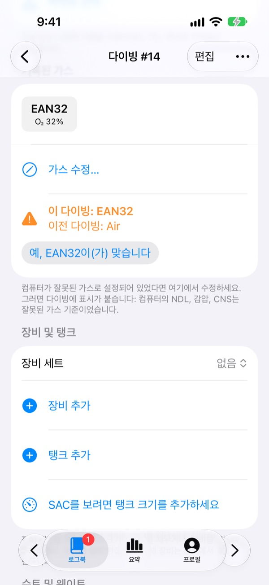
다이빙 읽기
| 작업 | iPhone 및 iPad | Mac |
|---|---|---|
| 어느 순간이든 읽기 | 차트 위를 드래그하세요. | 차트를 가리키세요. |
| 다이빙 직접 기록 | 로그북 → 직접 기록 | ⌘N |
- 안전 값은 모든 다이빙 맨 위의 고정된 띠에 항상 같은 자리에 있습니다.
- 프로파일: 차트 아래의 칩으로 탱크, ppO₂, NDL, SAC, 수온, CNS, 상승을 쌓기 띠 또는 하나의 겹치기로 보이거나 숨깁니다. 다이빙에 기록된 항목만 칩이 생깁니다. NDL은 컴퓨터 자체의 값이며 감압 중에는 멈추고, 그동안 빨간 띠가 감압 정지를 보여 줍니다. 폭이 좁은 iPhone에서는 칩이 한 줄에 머물고 옆으로 스크롤됩니다. 홈 페이지에서 직접 해 보세요.
- 리브리더: 이를 기록하는 컴퓨터나 파일이라면 무엇이든, ppO₂ 띠에 셋포인트와 보팅된 ppO₂(기록된 경우 각 셀도)가 표시되고, 판독값에는 그 순간의 셋포인트가 나옵니다. 딜루언트에서 다른 가스로 바꾸면 베일아웃으로 표시됩니다.
- 가스 사용량: SAC 수치 옆의 계산 방법을 탭하거나 클릭하면 모든 입력값을 볼 수 있습니다: 탱크, 내용적, 압력, 온도, 실제 기체 보정.
- 편집: 어떤 다이빙이든 편집할 수 있습니다. 수정해도 컴퓨터의 원래 판독값은 남습니다.
- 웨이트: +를 처음 탭하면 착용하지 않은 다이빙을 위한 웨이트 없음이 설정됩니다. 거기서 −를 탭하면 지워집니다.
- 메모의 링크: 다이빙 메모의 웹 링크는 탭하거나 클릭할 수 있습니다. 입력을 마쳤으면 키보드 위의 완료를 탭하세요: 그러면 링크가 표시되고, YouTube나 Vimeo 링크에는 메모 아래에 …을(를) 동영상 링크에 추가 버튼이 생깁니다. 메모에 다시 입력하려면 메모 편집을 선택하세요.


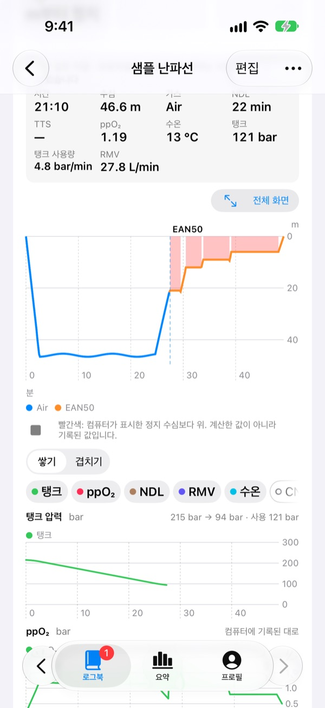


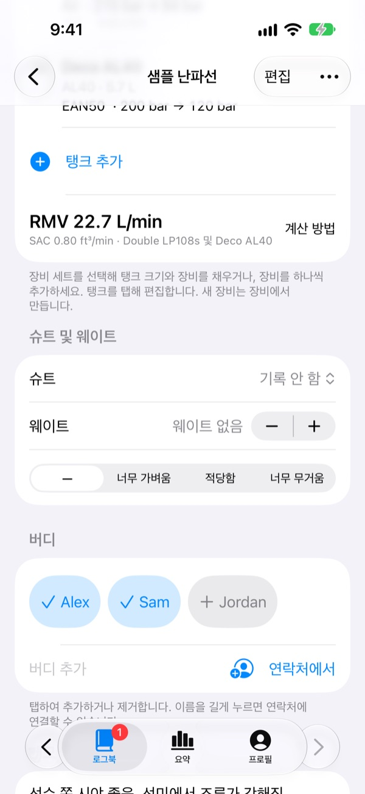

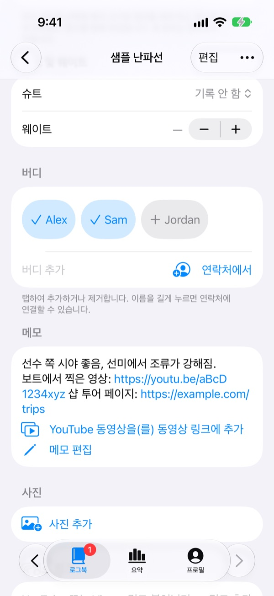

사이트, 위치, Apple Watch
| 작업 | iPhone 및 iPad | Mac |
|---|---|---|
| 사이트 추가 | 프로필 → 사이트에서 추가 버튼을 누른 다음 사이트 찾기 또는 이름 지정 또는 여기에 지점 표시 (GPS). | 이동 → 사이트 (⌘4), 그다음 사이트 추가… |
| 목록의 모든 사이트 보기 | 프로필 → 사이트 → 지도에서 지구본 버튼을 누르거나 끝까지 핀치해 축소하세요. 난파선은 주황색, 리프와 다이브 사이트는 파란색, 내 사이트는 빨간 깃발입니다. | 사이트에서 도구 막대의 지구본 보기를 누르거나 끝까지 축소하세요. |
| 위치 찾기 | 위치가 없는 사이트에는 위치 찾기가 표시됩니다: 지도에서 제안을 확인하거나, 좌표를 입력하거나, 핀을 놓으세요. | 위치 찾기…는 위치가 없는 모든 사이트를 하나씩 차례로 처리합니다. |
Apple Watch: 수면에서 지점을 표시하면 iPhone의 확인 필요에서 기다립니다. Apple Watch를 참고하세요.
사이트 위치는 기록용이며, 내비게이션용이 아닙니다.

Apple Watch
Watch 앱은 한 가지만 합니다: 수면에서 현재 위치를 표시해 다이빙 사이트를 쉽게 기록하게 해 줍니다. 다이빙은 기록하지 않으며, 다이빙은 다이브 컴퓨터에서 옵니다. watchOS 11 이상과 Thermocline이 설치된 iPhone이 필요합니다.
| 작업 | Apple Watch | iPhone |
|---|---|---|
| 설치 | iPhone 앱과 함께 설치됩니다. 워치에 없다면 iPhone에서 Watch 앱을 열고 사용 가능한 앱에서 Thermocline을 찾아 설치를 탭하세요. 처음에는 워치에서 Thermocline의 위치 접근을 허용하세요. | |
| 지점 표시 | 수면에서 사이트 위에 있을 때 Thermocline을 여세요. 양호한 측위가 될 때까지 기다린 다음 지점 표시를 탭하세요. 저장되면 워치가 손목을 톡 두드립니다. | 지점은 자동으로 도착합니다. iPhone이 범위를 벗어나 있으면 다시 가까워졌을 때 전송됩니다. |
| 이름 붙이기 | 선택 사항. 표시한 뒤 또는 나중에 표시한 지점에서 이름 추가를 탭하고 말하거나, 손으로 쓰거나, 입력하세요. 예: "난파선 선수". 마치면 저장됩니다. | 이름은 새 사이트의 이름으로 제안됩니다. 그대로 쓰거나 다른 사이트를 선택할 수 있습니다. |
| 확인 | 워치에서는 할 일이 없습니다. | 로그북 → 확인 필요. iPhone이 온라인일 때 지점을 검색해 가장 가까운 알려진 사이트를 제안하고, 그 지점이 속할 가능성이 가장 높은 다이빙을 보여 줍니다. 확인하거나 버리세요. |
| 전송 확인 | 표시한 지점에 각 지점이 iPhone으로 보냄 또는 iPhone으로 보내기 대기 중과 함께 지도로 표시됩니다. 지점은 iPhone에서 확인하거나 버리면 워치에서 사라집니다. | 확인되면 사이트는 다른 사이트와 마찬가지로 다른 기기와 동기화됩니다. |

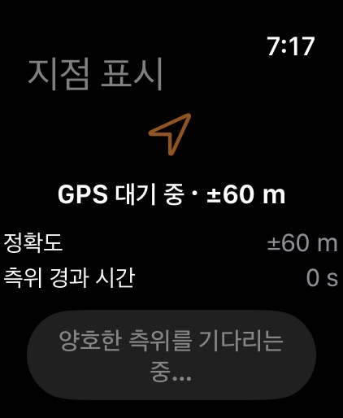

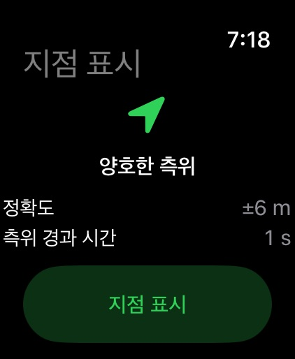

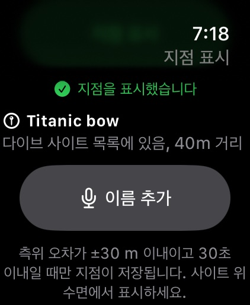

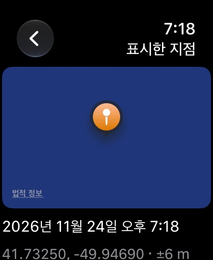
워치는 오차 ±30 m 이내, 30 초 이내의 측위로만 지점을 저장하며, 오래된 캐시 위치는 무시합니다. 물속이 아니라 수면에서 표시하세요.
사이트 위치는 기록용이며, 내비게이션용이 아닙니다.
장비와 탱크
| 작업 | iPhone 및 iPad | Mac |
|---|---|---|
| 장비 열기 | 프로필 → 장비 | 이동 → 장비 |
- 탱크에서 모델을 누르면 탱크 카탈로그가 열립니다: 제조사나 모델로 검색해(예: "PST LP104") 공개된 사양을 채우거나, 직접 수치를 입력하세요.
- 트윈세트라면 더블 탱크 (매니폴드 연결)를 체크하세요.
- +가 각인된 스틸 탱크: 마지막 수압 검사에서 +가 유지되었다면 + 표시를 켜세요. 예를 들어 2400+로 표시됩니다. 이 스위치는 탱크 크기를 입방피트로 표시할 때 나타납니다.
- 각 다이빙의 탱크는 다이빙의 가스 섹션에 있습니다(탱크 추가, 장비 세트).
다이빙 병합 및 합치기
- 병합은 컴퓨터 두 대가 기록한 하나의 다이빙용입니다. 두 기록이 모두 유지되며 차트에서 서로 전환할 수 있습니다.
- 합치기는 잠깐 수면에 올라와 둘로 나뉜 하나의 다이빙용입니다.
- Thermocline은 어느 쪽도 스스로 하지 않습니다. 짝일 가능성이 높은 다이빙을 발견하면 로그북 맨 위의 배너에서 검토를 제안합니다.
| 작업 | iPhone 및 iPad | Mac |
|---|---|---|
| 직접 하기 | 선택을 탭하고 다이빙 두 개를 고른 다음 병합 또는 합치기. | 다이빙 두 개를 선택하고 오른쪽 클릭: 이 다이빙들 병합… 또는 이 다이빙들 합치기… |
| 마음이 바뀐 경우 | 바로 실행 취소하거나, 언제든 다이빙에서 이 다이빙들 분리. | |
사진과 동영상 링크
- 다이빙에서 사진 추가를 하면 보관함의 사진이 로그북으로 복사됩니다.
- iCloud 공간을 절약하려면 모든 기기에서 동기화 → 다이빙 사진의 iCloud 저장 공간 절약을 켜세요. 그러면 사진이 복사되지 않고 iCloud 사진에 연결되며, 보관함의 동영상도 추가할 수 있습니다. Thermocline은 이 설정을 켤 때만 사진 접근을 요청합니다.
- 동영상 링크: 다이빙 사진 아래에 YouTube나 Vimeo 링크를 붙여 넣으세요. 링크만 저장됩니다. 메모에 이미 있는 링크는 거기서 추가할 수 있습니다(다이빙 읽기 참고).
- 여러 다이빙에 같은 동영상: 다이빙을 선택하고(iPhone에서는 먼저 선택을 탭), 다이빙 …회 편집…을 고른 다음 동영상 링크에 링크를 추가하세요. 선택한 모든 다이빙에 추가되며, 이미 있던 링크는 유지됩니다.
요약과 가스 소비
요약 탭(Mac에서는 사이드바의 요약)은 로그북을 집계합니다: 연도별·월별 다이빙, 수심, 가스, 기록, 다이빙한 곳, 가장 많이 간 사이트와 버디. 맨 위에서 1년 등 기간을 고르고, 숫자나 막대를 탭하면 해당 다이빙을 볼 수 있습니다.
- 가스 소비는 기간 안에서 탱크 크기와 시작·종료 압력이 있는 모든 다이빙의 SAC와 RMV를 시간과 수심으로 가중해 보여 줍니다. 탭하면 어떤 다이빙이 계산에 들어갔는지 볼 수 있습니다.
- 가져온 다이빙 중 일부는 탱크 크기가 없어서 처음에는 가스 소비가 비어 있을 수 있습니다(어떤 MacDive 파일을 사용할까 참고). 장비에서 또는 각 다이빙에서 탱크를 설정하면 채워집니다.

iCloud와 동기화
| 작업 | iPhone 및 iPad | Mac |
|---|---|---|
| 동기화 켜기 | 프로필 → 동기화 | Thermocline → 설정 → 동기화 |
그러면 같은 Apple 계정에 로그인된 모든 기기가 내 개인 iCloud에 저장된 하나의 로그북을 공유합니다. 오프라인에서 한 변경은 기기에서 기다렸다가 다시 온라인이 되면 전송됩니다.
동기화 섹션에는 상태, 전송 대기 중인 항목, 이 기기와 다른 기기가 일치하는지가 표시됩니다. 지금 동기화를 누르면 바로 확인합니다.

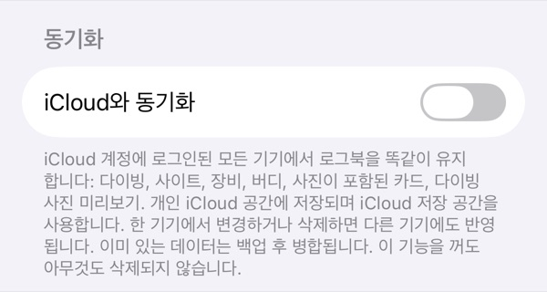
내보내기, 복원 지점, 지우기
| 작업 | iPhone 및 iPad | Mac |
|---|---|---|
| 내보내기 | 프로필 → 내 데이터 | 파일 메뉴 |
| 복원 지점 | 프로필 → 내 데이터 → 복원 지점 | 설정 → 내 데이터 → 복원 지점 |
- 내보내기: UDDF는 완전한 내보내기 형식이며 어떤 로그북으로든 옮겨 갈 수 있는 길입니다. 그 밖에 스프레드시트(CSV), MacDive XML, 동굴 측량용 북마크(CSV), 교육 과정 사전 요건용 경험 요약(텍스트)도 있습니다.
- 복원 지점: 동기화를 켜기 전, 대량 가져오기, 병합, 합치기, 지우기 전, 그리고 무엇이든 삭제하기 전에 하나씩 저장됩니다. 복원하면 먼저 현재 로그북을 복원 지점으로 저장하므로 되돌릴 수 있습니다.
- 지우기: 로그북 지우기…는 먼저 내보내기를 제안합니다. 동기화가 켜져 있으면 다른 기기도 따라갑니다.

아직 해결되지 않았나요?
문제 해결을 참고하거나, TestFlight에서 또는 brian@616labs.net으로 피드백을 보내 주세요.